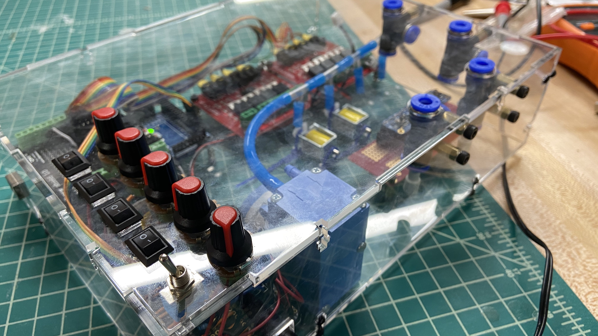
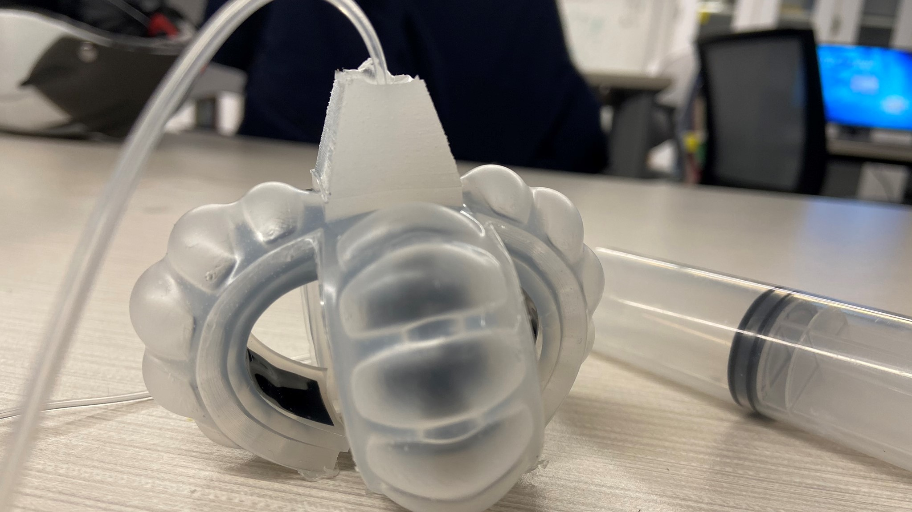

I joined Dr. Dennis Hong’s RoMeLa shortly after beginning my M.S. at UCLA, contributing to ongoing projects while also leading my own research on low-cost, high-performance quadruped robots.
In summer 2020, I worked remotely as an intern at Tufts Center for Engineering Education and Outreach (CEEO). We worked closely with LEGO Education to explore possibilities to use LEGO Education SPIKE Prime Set to teach middle and high school students artificial intelligence - mainly machine learning.
Coming from an ME background, I went through AI crash courses to get up-to-speed on the basic concepts, and came up with various demo activities that uses the LEGO SPIKE platform to teach machine learning concepts: K Nearest Neighbors, K Means Clustering, Support Vector Classification, etc. I was also able to build and test a LabVIEW user interface that integrates LEGO SPIKE Prime smoothly with scikit-learn, an advanced machine library available in python environments.
In Spring 2019, some friends and I started a student research team called Tufts Exosuit, which was created with a goal to attempt to design a soft exoskeleton or exosuit apparatus to help correct sedentary posture and reduce lower back pain. My work within the research group is primarily focusing on design for manufacturing simple silicone actuators powered by compressed air, as well as various methods to control them.

My undergraduate independent research: Developing a low-cost, modular pneumatic system for controlling soft robot actuators.

From replicating an open-source soft robotics control board to making my own version with improvements

A pneumatic silicone soft gripper made with 3D-printed and lasercut molds.